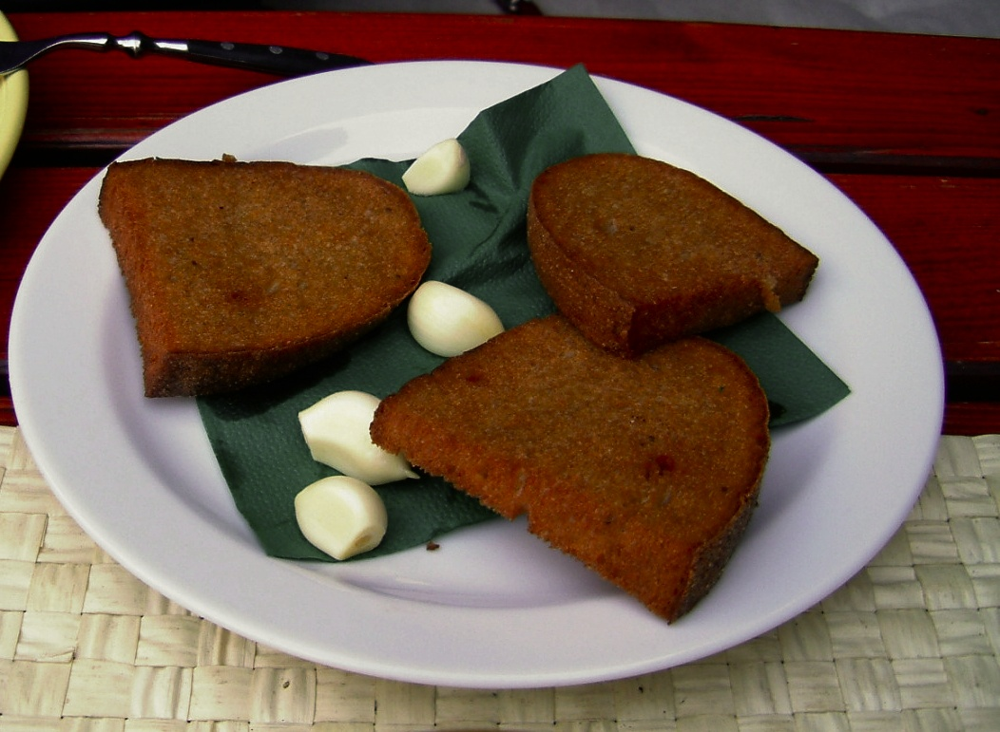

Topinka

Description
Topinka is the basic dish in every beer lover's inventory.
Delicious fried bread, some fresh garlic and no concern for bad smelling breath.
Ingrediens:
- bread, preferably older
- sunflower oil and lot's of it
- garlic
- beer
Steps:
- Open the beer and refresh yourself
- Put the pan on hellfire
- Pour generous amount of oil to the pan
- When the oil is hot (test with a drop of water), put the sliced bread onto the pan
- Wait till the one side is fried (warning: it's fast), then turn it.
- Refresh yourself again
- When both sides are ready, take the bread away from pan
- Cut one garlic clove and rub it onto the bread
- Congratulations, you have yourself a topinka!
- Drink the rest of the beer in celebration